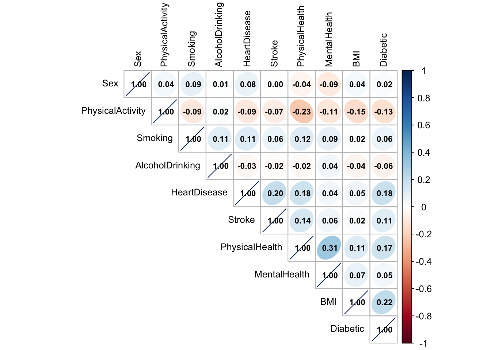

── Attaching core tidyverse packages ──────────────────────── tidyverse 2.0.0 ──
✔ dplyr 1.1.4 ✔ purrr 1.0.4
✔ forcats 1.0.0 ✔ stringr 1.5.1
✔ ggplot2 3.5.1 ✔ tibble 3.2.1
✔ lubridate 1.9.4 ✔ tidyr 1.3.1
── Conflicts ────────────────────────────────────────── tidyverse_conflicts() ──
✖ dplyr::filter() masks stats::filter()
✖ dplyr::lag() masks stats::lag()
ℹ Use the conflicted package (<http://conflicted.r-lib.org/>) to force all conflicts to become errors
Loading required package: lattice
Attaching package: 'caret'
The following object is masked from 'package:purrr':
lift
Type 'citation("pROC")' for a citation.
Attaching package: 'pROC'
The following objects are masked from 'package:stats':
cov, smooth, var
corrplot 0.95 loaded
Loaded ROSE 0.0-4What is your blogpost title? Add it here??
Assignment 4 ETC5512
Topic
Description
Dataset link
Download Process
Data Usage
heart_data1 <- read.csv("data/heart_2020_cleaned.csv")
heart_data2 <- read.csv("data/heart_disease_health_indicators_BRFSS2015.csv")
head(heart_data1) HeartDisease BMI Smoking AlcoholDrinking Stroke PhysicalHealth MentalHealth
1 No 16.60 Yes No No 3 30
2 No 20.34 No No Yes 0 0
3 No 26.58 Yes No No 20 30
4 No 24.21 No No No 0 0
5 No 23.71 No No No 28 0
6 Yes 28.87 Yes No No 6 0
DiffWalking Sex AgeCategory Race Diabetic PhysicalActivity GenHealth
1 No Female 55-59 White Yes Yes Very good
2 No Female 80 or older White No Yes Very good
3 No Male 65-69 White Yes Yes Fair
4 No Female 75-79 White No No Good
5 Yes Female 40-44 White No Yes Very good
6 Yes Female 75-79 Black No No Fair
SleepTime Asthma KidneyDisease SkinCancer
1 5 Yes No Yes
2 7 No No No
3 8 Yes No No
4 6 No No Yes
5 8 No No No
6 12 No No Nohead(heart_data2) HeartDiseaseorAttack HighBP HighChol CholCheck BMI Smoker Stroke Diabetes
1 0 1 1 1 40 1 0 0
2 0 0 0 0 25 1 0 0
3 0 1 1 1 28 0 0 0
4 0 1 0 1 27 0 0 0
5 0 1 1 1 24 0 0 0
6 0 1 1 1 25 1 0 0
PhysActivity Fruits Veggies HvyAlcoholConsump AnyHealthcare NoDocbcCost
1 0 0 1 0 1 0
2 1 0 0 0 0 1
3 0 1 0 0 1 1
4 1 1 1 0 1 0
5 1 1 1 0 1 0
6 1 1 1 0 1 0
GenHlth MentHlth PhysHlth DiffWalk Sex Age Education Income
1 5 18 15 1 0 9 4 3
2 3 0 0 0 0 7 6 1
3 5 30 30 1 0 9 4 8
4 2 0 0 0 0 11 3 6
5 2 3 0 0 0 11 5 4
6 2 0 2 0 1 10 6 8str(heart_data1)'data.frame': 319795 obs. of 18 variables:
$ HeartDisease : chr "No" "No" "No" "No" ...
$ BMI : num 16.6 20.3 26.6 24.2 23.7 ...
$ Smoking : chr "Yes" "No" "Yes" "No" ...
$ AlcoholDrinking : chr "No" "No" "No" "No" ...
$ Stroke : chr "No" "Yes" "No" "No" ...
$ PhysicalHealth : num 3 0 20 0 28 6 15 5 0 0 ...
$ MentalHealth : num 30 0 30 0 0 0 0 0 0 0 ...
$ DiffWalking : chr "No" "No" "No" "No" ...
$ Sex : chr "Female" "Female" "Male" "Female" ...
$ AgeCategory : chr "55-59" "80 or older" "65-69" "75-79" ...
$ Race : chr "White" "White" "White" "White" ...
$ Diabetic : chr "Yes" "No" "Yes" "No" ...
$ PhysicalActivity: chr "Yes" "Yes" "Yes" "No" ...
$ GenHealth : chr "Very good" "Very good" "Fair" "Good" ...
$ SleepTime : num 5 7 8 6 8 12 4 9 5 10 ...
$ Asthma : chr "Yes" "No" "Yes" "No" ...
$ KidneyDisease : chr "No" "No" "No" "No" ...
$ SkinCancer : chr "Yes" "No" "No" "Yes" ...summary(heart_data1) HeartDisease BMI Smoking AlcoholDrinking
Length:319795 Min. :12.02 Length:319795 Length:319795
Class :character 1st Qu.:24.03 Class :character Class :character
Mode :character Median :27.34 Mode :character Mode :character
Mean :28.33
3rd Qu.:31.42
Max. :94.85
Stroke PhysicalHealth MentalHealth DiffWalking
Length:319795 Min. : 0.000 Min. : 0.000 Length:319795
Class :character 1st Qu.: 0.000 1st Qu.: 0.000 Class :character
Mode :character Median : 0.000 Median : 0.000 Mode :character
Mean : 3.372 Mean : 3.898
3rd Qu.: 2.000 3rd Qu.: 3.000
Max. :30.000 Max. :30.000
Sex AgeCategory Race Diabetic
Length:319795 Length:319795 Length:319795 Length:319795
Class :character Class :character Class :character Class :character
Mode :character Mode :character Mode :character Mode :character
PhysicalActivity GenHealth SleepTime Asthma
Length:319795 Length:319795 Min. : 1.000 Length:319795
Class :character Class :character 1st Qu.: 6.000 Class :character
Mode :character Mode :character Median : 7.000 Mode :character
Mean : 7.097
3rd Qu.: 8.000
Max. :24.000
KidneyDisease SkinCancer
Length:319795 Length:319795
Class :character Class :character
Mode :character Mode :character
str(heart_data2)'data.frame': 253680 obs. of 22 variables:
$ HeartDiseaseorAttack: num 0 0 0 0 0 0 0 0 1 0 ...
$ HighBP : num 1 0 1 1 1 1 1 1 1 0 ...
$ HighChol : num 1 0 1 0 1 1 0 1 1 0 ...
$ CholCheck : num 1 0 1 1 1 1 1 1 1 1 ...
$ BMI : num 40 25 28 27 24 25 30 25 30 24 ...
$ Smoker : num 1 1 0 0 0 1 1 1 1 0 ...
$ Stroke : num 0 0 0 0 0 0 0 0 0 0 ...
$ Diabetes : num 0 0 0 0 0 0 0 0 2 0 ...
$ PhysActivity : num 0 1 0 1 1 1 0 1 0 0 ...
$ Fruits : num 0 0 1 1 1 1 0 0 1 0 ...
$ Veggies : num 1 0 0 1 1 1 0 1 1 1 ...
$ HvyAlcoholConsump : num 0 0 0 0 0 0 0 0 0 0 ...
$ AnyHealthcare : num 1 0 1 1 1 1 1 1 1 1 ...
$ NoDocbcCost : num 0 1 1 0 0 0 0 0 0 0 ...
$ GenHlth : num 5 3 5 2 2 2 3 3 5 2 ...
$ MentHlth : num 18 0 30 0 3 0 0 0 30 0 ...
$ PhysHlth : num 15 0 30 0 0 2 14 0 30 0 ...
$ DiffWalk : num 1 0 1 0 0 0 0 1 1 0 ...
$ Sex : num 0 0 0 0 0 1 0 0 0 1 ...
$ Age : num 9 7 9 11 11 10 9 11 9 8 ...
$ Education : num 4 6 4 3 5 6 6 4 5 4 ...
$ Income : num 3 1 8 6 4 8 7 4 1 3 ...summary(heart_data2) HeartDiseaseorAttack HighBP HighChol CholCheck
Min. :0.00000 Min. :0.000 Min. :0.0000 Min. :0.0000
1st Qu.:0.00000 1st Qu.:0.000 1st Qu.:0.0000 1st Qu.:1.0000
Median :0.00000 Median :0.000 Median :0.0000 Median :1.0000
Mean :0.09419 Mean :0.429 Mean :0.4241 Mean :0.9627
3rd Qu.:0.00000 3rd Qu.:1.000 3rd Qu.:1.0000 3rd Qu.:1.0000
Max. :1.00000 Max. :1.000 Max. :1.0000 Max. :1.0000
BMI Smoker Stroke Diabetes
Min. :12.00 Min. :0.0000 Min. :0.00000 Min. :0.0000
1st Qu.:24.00 1st Qu.:0.0000 1st Qu.:0.00000 1st Qu.:0.0000
Median :27.00 Median :0.0000 Median :0.00000 Median :0.0000
Mean :28.38 Mean :0.4432 Mean :0.04057 Mean :0.2969
3rd Qu.:31.00 3rd Qu.:1.0000 3rd Qu.:0.00000 3rd Qu.:0.0000
Max. :98.00 Max. :1.0000 Max. :1.00000 Max. :2.0000
PhysActivity Fruits Veggies HvyAlcoholConsump
Min. :0.0000 Min. :0.0000 Min. :0.0000 Min. :0.0000
1st Qu.:1.0000 1st Qu.:0.0000 1st Qu.:1.0000 1st Qu.:0.0000
Median :1.0000 Median :1.0000 Median :1.0000 Median :0.0000
Mean :0.7565 Mean :0.6343 Mean :0.8114 Mean :0.0562
3rd Qu.:1.0000 3rd Qu.:1.0000 3rd Qu.:1.0000 3rd Qu.:0.0000
Max. :1.0000 Max. :1.0000 Max. :1.0000 Max. :1.0000
AnyHealthcare NoDocbcCost GenHlth MentHlth
Min. :0.0000 Min. :0.00000 Min. :1.000 Min. : 0.000
1st Qu.:1.0000 1st Qu.:0.00000 1st Qu.:2.000 1st Qu.: 0.000
Median :1.0000 Median :0.00000 Median :2.000 Median : 0.000
Mean :0.9511 Mean :0.08418 Mean :2.511 Mean : 3.185
3rd Qu.:1.0000 3rd Qu.:0.00000 3rd Qu.:3.000 3rd Qu.: 2.000
Max. :1.0000 Max. :1.00000 Max. :5.000 Max. :30.000
PhysHlth DiffWalk Sex Age
Min. : 0.000 Min. :0.0000 Min. :0.0000 Min. : 1.000
1st Qu.: 0.000 1st Qu.:0.0000 1st Qu.:0.0000 1st Qu.: 6.000
Median : 0.000 Median :0.0000 Median :0.0000 Median : 8.000
Mean : 4.242 Mean :0.1682 Mean :0.4403 Mean : 8.032
3rd Qu.: 3.000 3rd Qu.:0.0000 3rd Qu.:1.0000 3rd Qu.:10.000
Max. :30.000 Max. :1.0000 Max. :1.0000 Max. :13.000
Education Income
Min. :1.00 Min. :1.000
1st Qu.:4.00 1st Qu.:5.000
Median :5.00 Median :7.000
Mean :5.05 Mean :6.054
3rd Qu.:6.00 3rd Qu.:8.000
Max. :6.00 Max. :8.000 # Rename columns for consistency
heart_data2 <- heart_data2 %>% rename(
Smoking = Smoker,
Diabetic = Diabetes,
PhysicalActivity = PhysActivity,
PhysicalHealth = PhysHlth,
MentalHealth = MentHlth,
AlcoholDrinking = HvyAlcoholConsump,
HeartDisease = HeartDiseaseorAttack
)
heart_data2 <- heart_data2 %>%
mutate(
Diabetic = ifelse(Diabetic == 2, 1, Diabetic)
)# Convert categorical columns to numerical
heart_data1 <- heart_data1 %>%
mutate(
HeartDisease = ifelse(HeartDisease == "Yes", 1, 0),
Smoking = ifelse(Smoking == "Yes", 1, 0),
AlcoholDrinking = ifelse(AlcoholDrinking == "Yes", 1, 0),
Stroke = ifelse(Stroke == "Yes", 1, 0),
PhysicalActivity = ifelse(PhysicalActivity == "Yes", 1, 0),
Diabetic = ifelse(Diabetic == "Yes", 1, ifelse(Diabetic == "No", 0, NA)),
Sex = ifelse(Sex == "Male", 1, 0)
)# Select common columns
common_columns <- c("HeartDisease", "BMI", "Smoking", "AlcoholDrinking", "Stroke",
"PhysicalHealth", "MentalHealth", "Sex", "Diabetic", "PhysicalActivity")
heart_data1 <- heart_data1 %>% select(all_of(common_columns))
heart_data2 <- heart_data2 %>% select(all_of(common_columns))# Combine datasets
combined_data <- bind_rows(heart_data1, heart_data2)# Perform exploratory data analysis (EDA)
correlation_matrix <- cor(combined_data, use = "complete.obs")
corrplot(correlation_matrix, method = "ellipse", type = "upper",
tl.col = "black", tl.cex = 0.8,
addCoef.col = "black", number.cex = 0.7,
order = "hclust", addrect = 2)
print(table(combined_data$HeartDisease))
0 1
522209 51266 ggplot(combined_data, aes(x = as.factor(HeartDisease))) +
geom_bar(fill = "steelblue") +
labs(title = "HeartDisease Distribution", x = "Heart Disease (0 = No, 1 = Yes)", y = "Count")# Boxplots for BMI, PhysicalHealth, and MentalHealth
numerical_features <- c("BMI", "PhysicalHealth", "MentalHealth")
for (feature in numerical_features) {
print(
ggplot(combined_data, aes_string(y = feature)) +
geom_boxplot(fill = "steelblue", color = "black", outlier.color = "red", outlier.shape = 16) +
labs(title = paste("Boxplot of", feature), y = feature) +
theme_minimal()
)
}# Convert target variable to a factor
combined_data <- combined_data %>%
mutate(
HeartDisease = as.factor(HeartDisease),
Smoking = as.factor(Smoking),
AlcoholDrinking = as.factor(AlcoholDrinking),
Stroke = as.factor(Stroke),
PhysicalActivity = as.factor(PhysicalActivity),
Sex = as.factor(Sex),
Diabetic = as.factor(Diabetic),
BMI = as.numeric(BMI),
PhysicalHealth = as.numeric(PhysicalHealth),
MentalHealth = as.numeric(MentalHealth)
)
str(combined_data)'data.frame': 573475 obs. of 10 variables:
$ HeartDisease : Factor w/ 2 levels "0","1": 1 1 1 1 1 2 1 1 1 1 ...
$ BMI : num 16.6 20.3 26.6 24.2 23.7 ...
$ Smoking : Factor w/ 2 levels "0","1": 2 1 2 1 1 2 1 2 1 1 ...
$ AlcoholDrinking : Factor w/ 2 levels "0","1": 1 1 1 1 1 1 1 1 1 1 ...
$ Stroke : Factor w/ 2 levels "0","1": 1 2 1 1 1 1 1 1 1 1 ...
$ PhysicalHealth : num 3 0 20 0 28 6 15 5 0 0 ...
$ MentalHealth : num 30 0 30 0 0 0 0 0 0 0 ...
$ Sex : Factor w/ 2 levels "0","1": 1 1 2 1 1 1 1 1 1 2 ...
$ Diabetic : Factor w/ 2 levels "0","1": 2 1 2 1 1 1 1 2 NA 1 ...
$ PhysicalActivity: Factor w/ 2 levels "0","1": 2 2 2 1 2 1 2 1 1 2 ...# Train-test split
set.seed(123)
train_index <- createDataPartition(combined_data$HeartDisease, p = 0.7, list = FALSE)
train_data <- combined_data[train_index, ]
test_data <- combined_data[-train_index, ]
str(train_data)'data.frame': 401434 obs. of 10 variables:
$ HeartDisease : Factor w/ 2 levels "0","1": 1 1 1 1 1 2 1 1 1 1 ...
$ BMI : num 26.6 24.2 21.6 26.4 40.7 ...
$ Smoking : Factor w/ 2 levels "0","1": 2 1 1 1 1 2 2 2 1 2 ...
$ AlcoholDrinking : Factor w/ 2 levels "0","1": 1 1 1 1 1 1 1 1 1 1 ...
$ Stroke : Factor w/ 2 levels "0","1": 1 1 1 1 1 1 1 1 1 1 ...
$ PhysicalHealth : num 20 0 15 0 0 30 0 0 5 0 ...
$ MentalHealth : num 30 0 0 0 0 0 0 30 2 30 ...
$ Sex : Factor w/ 2 levels "0","1": 2 1 1 1 2 2 1 1 1 2 ...
$ Diabetic : Factor w/ 2 levels "0","1": 2 1 1 NA 1 2 1 1 1 NA ...
$ PhysicalActivity: Factor w/ 2 levels "0","1": 2 1 2 1 2 1 2 1 1 2 ...table(train_data$Diabetic)
0 1
338176 56693 set.seed(123)What’s in this section
Here is where you should write your blogpost! (Task 2)
Blogpost Structure
There is no strict structure for you to follow. However, here is a skeleton structure you may find helpful.
- Title (is set at the top of this document)
- Motivation
- Data
- Analysis
- Conclusions
- References
What’s in this section
Here is where you should tell us about your reflection on your analysis (Task 3).
Again, these are the details about your perspective and the gritty details behind the scenes of your analysis.